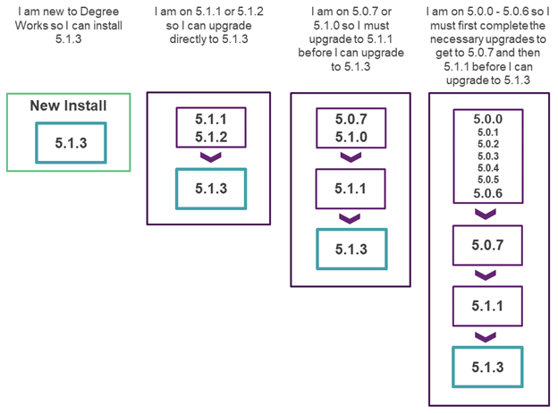

Release 5.1.3
Degree Works 5.1.3 includes new functionality, improves existing functionality, resolves change requests, and more.
For more detailed information about the release, see the Degree Works 5.1.3 release record.
General Degree Works Release Information
Overview
The central themes of Release 5.1.3 include expanding the functionality offered in the Responsive Dashboard and Transit to meet the needs of the client base and enhancements to support Degree Works as a SaaS solution. Release 5.1.3 also meets customer satisfaction goals by delivering 19 improvements and 89 problem resolutions.
This release is a MINOR release so the version has been assigned as Release 5.1.3, and it will build on the baseline established by the previous MAJOR release, Release 5.1.0, and subsequent releases. This is still a significant release in terms of the product direction, and it continues to build on the infrastructure introduced for Cloud delivery.
Upgrade path
The Degree Works Release 5.1.3 supports a new installation or a direct upgrade path for existing customers currently on Release 5.1.1 or Release 5.1.2.

With the release of Release 5.1.3, Release 5.1.1 and Release 5.1.2 are in Maintenance Support, while Releases 5.0.0 – 5.1.0 are in Sustaining Support. Details about Ellucian Support Assurance can be found in article number 000038478.
All Degree Works versions before 5.0.0 are in End of Support as of January 1, 2021. If you are on a 4.x version of Degree Works, you must upgrade to at least Release 5.1.1 to process Release 5.1.3.
We encourage customers to stay current with releases so multiple jumps are not required when processing a new release upgrade.
If you are on any service pack level, the upgrade path you should follow is from your base release as service packs are included in the next release. For example, if you are on 5.1.2.2, you would follow the path of upgrading from Release 5.1.2 to Release 5.1.3.
Degree Works hardware and software requirements
Before beginning a new installation or upgrade, be sure to verify that your Degree Works environments meet the hardware and software requirements.
Supported Hardware Architectures and Associated Operating Systems
For new client installations, only the following hardware architecture and operating system configurations are supported for Degree Works servers:
- Intel-based x86 running Red Hat Enterprise Linux 7.x or 8.x (64-bit)
- Intel-based x86 running Oracle Linux Server 7.x or 8.x (64-bit)
For upgrading clients only, the following hardware architecture and operating system configurations are supported for Degree Works servers:
- Intel-based x86 running Red Hat Enterprise Linux 7.x or 8.x (64-bit)
- Intel-based x86 running Oracle Linux Server 7.x or 8.x (64-bit)
- IBM running AIX 7.x (64-bit)
- Sun SPARC platform running Solaris 11 (64-bit)
- HP Integrity Platform (IA64) running HP-UX 11.x (64-bit)
Supported RDBMS
Degree Works Release 5.1.3 supports Oracle 19c.
Supported Browsers
Ellucian makes every effort to test and support the current versions of the following browsers at the time of a release:
- Google Chrome
- Mozilla Firefox
- Apple Safari
- Microsoft Edge
For additional information, please review the Ellucian Global Web Browser Support Policy and Matrix.
RabbitMQ
Degree Works Release 5.1.3 has been tested on Linux 8 against the following versions:
- RabbitMQ server v3.12
- RabbitMQ client v0.13.0 and v0.11.0
If you are using a Linux 7 server, you will need to use RabbitMQ client v0.11.0.
Java
Degree Works Release 5.1.3 requires Oracle Java Development Kit (JDK) or OpenJDK version 11 on both your classic and application servers.
GCC Compiler
Degree Works Release 5.1.3 requires GCC version 8.x. This release of Degree Works is incompatible with GCC version 4.8.x, and the software will not compile with this GCC version.
Apache FOP
Degree Works requires Apache FOP version 2.6 on the classic server.
OpenSSL
Degree Works requires OpenSSL, including the openssl-devel package.
For more details on all hardware and software requirements, see Degree Works Installation.
Degree Works Enhancements
Advanced Search highlights
Responsive Dashboard: Advanced Search does not always sort the columns correctly when selected
Sorting in the Responsive Dashboard advanced search dialog now properly sorts the search results on any selected column regardless of whether students are deselected.
API highlights
Generate an anonymous audit for a given set of goal data and coursework
An anonymous audit can now be generated for a provided set of goal data and coursework without providing a student Id by using the existing /api/audit/what-if endpoint. This is similar to the /api/articulation endpoint for U.Select integration that was obsoleted in Release 5.1.1 but provides a broader set of functionality.
Audit highlights
Create utility to move historical audits in DAP_AUDTREE_DTL to DAP_AUDIT_TREE
For users storing audits in the dap_audit_tree table (that is, DW_AUDIT_BLOB=1 in their dwenv.cfg), a new convertauditstoblobs script exists that will convert old audits stored in the dap_audtree_dtl table to a BLOB stored in the dap_audit_tree table. The script can be run in test mode for a single audit or for a single student before running for large volumes of data. Several other parameters exist for the script and are documented when running convertauditstoblobs --help.
Use in progress courses before pre-registered
Preregistered classes are now given a slightly lower match level compared to in-progress classes when applying to a rule. This allows in-progress classes to have precedence, all other factors being equal.
Improve sharing between multiple blocks so that courses are not shared when they shouldn't be
The auditor has been enhanced to deal with over sharing of classes between multiple blocks. The "triangle sharing" or "transitive sharing" issue has been addressed. This is when blockA can share with blockB, blockB can share with blockC but blockA and blockC cannot share. A new Recheck DontShare flag has been added to CFG020 DAP14 to tell the auditor to perform additional checks on the DontShare qualifiers to be sure inappropriate sharing is not occurring.
Allow configuration of details that display on the Athletic Eligibility Audit
Additional athletic eligibility details can now be configured to display on the Athletic Eligibility Audit, and schools will now be able to control which items display on the worksheet and its PDF.
Update diagnostics to record fits when the max is zero
The Diagnostics Report now shows which classes match Max-zero qualifiers.
Diagnostics: Strike Through Classes that were NOT used to meet Header
The Diagnostics Report now shows which classes were removed and which are still on Min and Max header qualifiers.
Auditor removing a class because of a MinCredits qualifier on another block
When deciding which classes to keep on a rule, the auditor will now only consider Min header qualifiers that are in the same block as the rule being processed.
When block rules are scribed as group options, the blocks may not be included in the audit under some circumstances
Block rules that may be needed to complete Group rules will no longer be removed from the audit.
GPA calculated from MINGPA qualifier does not consider CFG020 DAP14 Failed counts in Overall GPA flag
When a MinGPA qualifier is used in the degree block, the GPA calculated will now take into account the CFG020 DAP14 Failed classes count in the GPA flag.
Large numbers of cross-listings processed in header requirements cause a StenoAbort
If CFG020 DAP13 Process Cross-listings is enabled, large numbers of cross-listings will no longer cause a Steno abort when saving a block with a large number of wildcard requirements.
FOP 2.6 will attempt to use x11 forwarding and fail if webrestart is run while DISPLAY variable is set
Creating a PDF audit will no longer fail if the DISPLAY environment variable is defined.
"Apply Here" exception should override ShareWith/DontShare limits
The Apply Here exception will now allow a class to apply multiple times and will always be enforced regardless of the sharing rules that may or may not be present.
During redemption classes are sometimes not being reapplied because it looks like MaxCredit qualifiers are already at their max when they are not
During redemption, the auditor now recalculates how many classes and credits are applied to Max qualifiers before checking to see if the qualifier is already at its max.
Athletic Eligibility Dashboard Audit Progress Circles Credits Percentage rounding not truncating
In Responsive Dashboard, the Athletic Eligibility Audit is now truncating, instead of rounding, the credit percent value under Degree Progress. For example, 34.7% will now become 34% instead of 35%.
Bridge highlights
Existing user's User Class being Overwritten with APP during applicant extract
When bridging a new applicant record for an existing advisor (user class ADV), the bridge will no longer downgrade the user class to applicant (user class APP).
Error during bannerextract when extracting a User that was previously added to Degree Works via the Users function of Controller - Error ORA-00001: unique constraint
The bridge will no longer fail to add a SHP_USER_MST record for a bridged user if the user was first added in Controller using the same access ID.
Controller highlights
Controller: Click on row to view configuration instead of arrow on the right
In Controller, an individual configuration can now be opened from the Search for configuration page by selecting anywhere in the row, rather than selecting a view button.
CourseLink highlights
Allow term used by CourseLink for the course description to be configurable
The WHERE clause in integration.banner.extract.config for Course Link course descriptions pulled from SCBDESC can now be configured as needed.
Responsive Dashboard highlights
Responsive Dashboard: allow additional text to be added to each page
In Responsive Dashboard, you can now add header text to each page or tab using the headerText properties in DashboardMessages.properties in Controller. You can also localize the font color and weight and have different text for different user classes.
Rewrite the Notes and Petitions APIs to use Java for enhanced maintainability, performance, and functionality
The Notes and Petitions APIs were rewritten to use Java instead of C. This not only improves maintainability and performance, but allows for line breaks and spaces in audit notes and petitions, similar to what was added to plan and template notes with PD0010471.
SEP Plans with 0 credit classes - Create Block failing
Create block in Plans is now working successfully when a plan has a 0 credit course and the studentPlanner.planner.createBlock.useClassesInRules Shepherd setting is set to false.
SEP4: Plan is being cut off in the expanded view, 6th course and higher are hidden with no option to scroll
When viewing a plan in the dashboard in the expanded view, all requirements are now accessible because a scroll bar will appear when more than six requirements exist in a single term.
An "On-Track" choice requirement on the Plan changes to "Warning" after the course's attribute is added to the requirement
When planner tracking is enabled and an attribute is on a class in a group, the planner will now mark the requirement as on-track if the student has the class with that specified attribute on their record.
Students are not being locked when inserting notes, petitions, or exceptions, potentially leading to duplicates
The student is now being locked for exceptions requests to prevent duplicate records from being created.
Scribe highlights
CPOS: Allow for "CPOS" as an AuditAction or AuditType for scribing
Two new reserved words (FREEZETYPE and DESCRIPTION) can now be used for scribing requirements when creating audits using the What-If API or DAP22 audit in Transit. This will allow Banner CPOS audits to take advantage of conditional requirements using If-statements.
Scribe: Provide predefined templates in the block editor to assist with scribing requirements
To make scribing requirements more efficient and reduce errors, a template library of common Scribe syntax is now available in the block editor. After the template has been placed, users must add their specific course requirements and labels. Over 100 predefined templates are included and you can create your own custom templates.
System highlights
Student locks are left in place if an audit or extract request is started but doesn't finish before a webrestart
Doing a webrestart will now automatically unlock students who were left locked because web07 was stopped while a student request was being processed.
Transfer Equivalency Self-Service highlights
Failed to Save Error when attempting to save in TREQSS when core.whatIf.enableCurriculumRules is set to true
The goal selections made in Transfer Equivalency Self-Service will be saved successfully upon clicking the save icon, even when the core.whatIf.enableCurriculumRules Shepherd setting is set to true.
Transit highlights
Schedule a sequence of jobs to run in Transit
In Transit, a user can create a sequence of saved job parameters to run at a given time. The sequence can be launched immediately or scheduled for a future date as a one-time event or on a recurring basis. This allows users without server access to schedule regular job sequences, similar to cron jobs.
Unparseable data may be input with Transit jobs and cause the Manage Jobs tab to fail to load
The Transit Completed Jobs tab now properly displays an error when data that cannot be parsed is encountered and the remainder of the user interface remains operable.
What-If highlights
What-If: Allow display of Future Classes to be configurable
The display of the Future Classes section in the What-If audit in Responsive Dashboard can now be controlled with the new core.whatIf.futureClasses.enabled Shepherd setting. When this setting is false, the Future Classes section will not display for all users.
Degree Works Updates
Database changes
There are several database changes in Release 5.1.3.
The DAP_FREEZE_ID field on DAP_AUDIT_DTL was increased from 10 bytes to 14 bytes:
The following fields were removed from DAP_NOTE_DTL:
- DAP_CREATE_ID
- DAP_MOD_DATE
- DAP_MOD_ID
- DAP_USER_LAST
The following tables were added:
- TRANSIT_SEQUENCE
- TRANSIT_SEQUENCE_JOB
The following tables were deleted:
- UCX-STU100
- UCX-STU351
- UCX-STU362
- UCX-STU379
- UCX-STU380
- UCX-STU382
- UCX-SEP010
Subtractions
The HTML response for the Audit Worksheet /api/audit endpoint that returns the latest audit for a student has been obsoleted. This response returned an audit formatted in the obsolete classic Dashboard styles. To request a formatted audit response, you should use a link to the student's worksheet in Responsive Dashboard instead. Note that the XML response for the Audit Worksheet /api/audit endpoint is still supported.
CFG020 EXCEPTIONS has been obsoleted and two new Shepherd settings have been created to replace functionality still in use. The Exceptions Tied to Degree flag has been moved to dash.exceptions.tiedToDegree.enabled. The Exceptions Tied to School flag has been moved to dash.exceptions.tiedToSchool.enabled.
CFG020 WEB has been obsoleted and three new Shepherd settings have been created to replace functionality still in use. The Run new audit if no audit exists flag has been moved to dash.audit.runIfNone.enabled. The Notes tied to degree flag has been moved to dash.notes.tiedToDegree.enabled. The Notes tied to school flag has been moved to dash.notes.tiedToSchool.enabled.
CFG020 WEBPARAMS has been obsoleted and three new Shepherd settings have been created to replace functionality still in use. The Create SHP_LOG_DTL flag has been moved to core.createShpLogs.enabled. The Term used for filtering in student search flag has been moved to dash.search.currentTerm. The Update Password when bridging users flag has been moved to the integration.bridge.changePassword.enabled.
Documentation
The documentation for this release is available on the Ellucian Documentation site. It can be viewed interactively and, if desired, can be exported in total or by topic. A login for the Customer Center will be required to access the entire suite of documentation.
A small subset of user documentation can be found on the Ellucian Documentation site under the Use category. The Use category is available to all users, including those without a Customer Center login.
Transfer Equivalency Self-Service will continue to have online help built-in because the target audience for this application is a prospective student.
You can find Degree Works product documentation in the Customer Center under Resources > Documentation > All Documentation and selecting Degree Works.
Degree Works API documentation is also available in the Customer Center under Resources > Documentation > All Documentation > API Catalog.
Degree Works 5.1.3 Service Pack 1
This patch corrects defects reported with Degree Works Release 5.1.3.
Click Attachments  on the side panel to download the service pack general information and instructions.
on the side panel to download the service pack general information and instructions.
Degree Works 5.1.3 Service Pack 2
This patch corrects defects reported with Degree Works Release 5.1.3.
Click Attachments on the side panel to download the service pack general information and instructions.